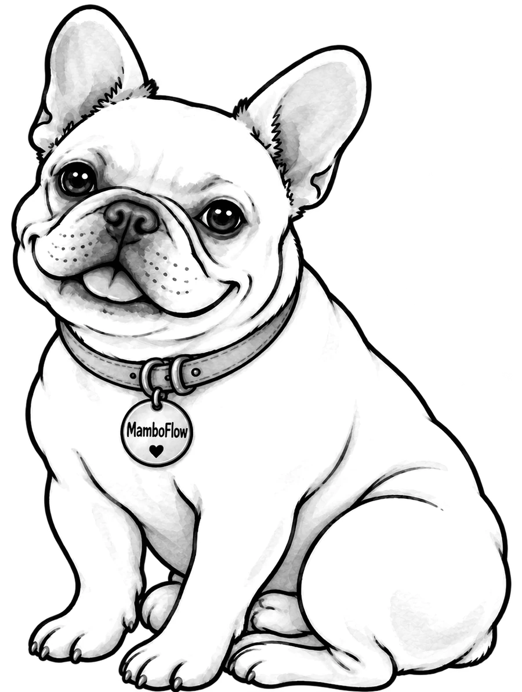
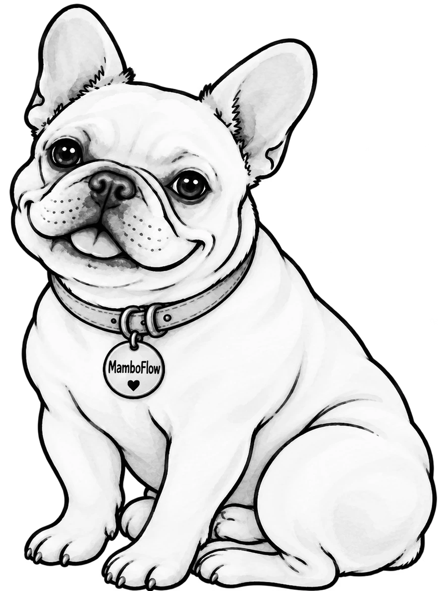
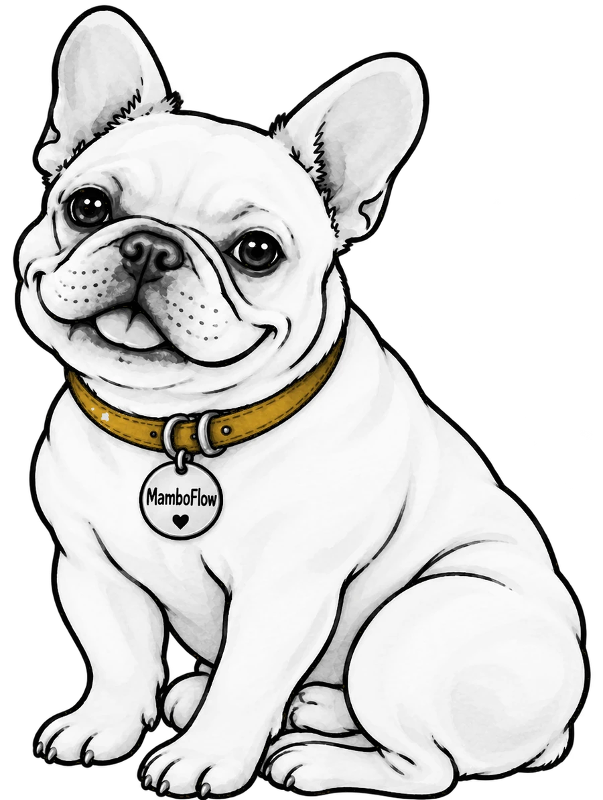
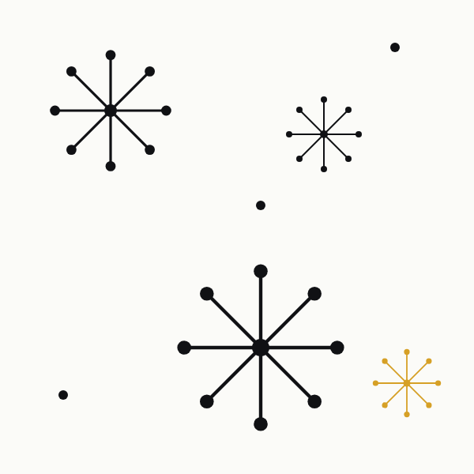
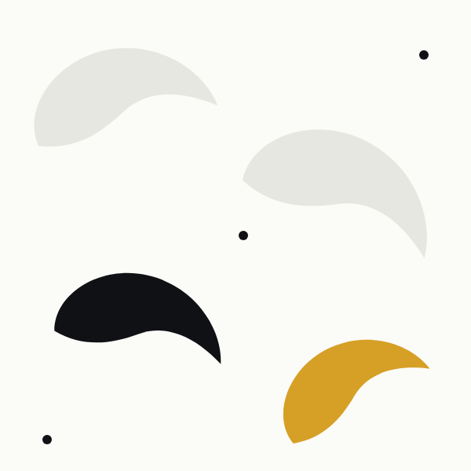

MamboFlow
MamboFlow is the In Good Company tool for getting social. Mambo is its face. This board shows how the dog, the wordmark, and the studio share one brand umbrella, and what to decide before the files go final.

One umbrella. Two voices.
In Good Company is the parent. MamboFlow is an endorsed product: it carries the studio name on every surface, borrows the studio's type and black-and-white discipline, and adds the warmth a social tool needs.
Strategy + Generosity + Impact + AI Innovation. Black and white, Bodoni Moda and Inter, square corners, hairlines, generous space.

Same type, same palette, same rules. Plus Mambo, a mid-century pattern language, and one accent color reserved for product surfaces.
MamboFlow inherits
- Bodoni Moda for display, Inter for everything else
- Black and white as the base. Paper, stone, soft, ink
- Square corners, 1px hairlines, no shadows, no gradients
- The voice principle: expertise without distance
- The sign-off: You're in good company.
MamboFlow adds
- Mambo, drawn in black and white only
- Three mid-century patterns: Signal, Atomic, Boomerang
- Mambo Mustard, one accent, product surfaces only, never on studio materials
- Shorter, lighter lines. Social captions may use contractions
- A wordmark where only the word Flow moves
Meet Mambo, in black and white.
The watercolor Frenchie keeps every line and all of his charm. Color leaves. The cream body becomes paper white, the teal collar becomes a quiet gray, and he now sits comfortably next to the studio logo without competing with it.






- AlwaysMambo is black and white. The collar is the only place color may ever live, and only on MamboFlow surfaces.
- NeverRecolor his coat, add effects, flip him so the tag reads backward, or crop below the collar in a lockup.
- Small sizesUse Stamp below 64px. The head alone is the avatar. The full body is for lockups and posts.
The dog, the word, the studio.
Every lockup reads in the same order: Mambo, the MamboFlow wordmark, then the endorsement line. The studio is named on every surface, so a single post or a tiny icon still points back to In Good Company.


- Clear spaceThe height of the capital M in the wordmark on every side. Minimum primary lockup width on screen: 220px.
- EndorsementBy In Good Company, set in Inter at 650 weight, uppercase, 0.24em tracking. Contracts and footers use the legal name: In Good Company Impact Studio, LLC.
- Swirl markThe studio mark joins the lockup only as the supplied file, never redrawn. It sits to the far right of the endorsement line at the same height as the capital M. Confirm
Black, white, and one honest yellow.
The palette is the studio's own. Mambo Mustard is the single addition: a mid-century yellow, used on one shape per surface, at most a tenth of any composition, and never on studio materials.
Funky backgrounds, strict rules.
Three mid-century patterns carry the fun so Mambo and the type can stay classic. Each is built from the brand's own hairlines and flat shapes. Signal is the default: concentric rings that read as a post going out into the world.



- One per surfaceNever mix patterns. Pick one and let it breathe.
- PlacementBehind Mambo or beside a headline. Never behind body copy.
- WeightStone on paper for calm. Ink for bold. Mustard on a single shape, or not at all.
Mambo's digital presence.
The X profile is the anchor. Everything else, from the sign-in screen to a post template to the email signature, is positioned from there so the studio logo and the dog always appear together.


Shorter lines, same warmth.
Mambo speaks the way the studio does, just with fewer words. Proposed lines below are drafts for your edit, not approved copy.
- TaglineSocial, in good company. Confirm
- Sign-offGet social. You're in good company. (Pairs the product with the approved studio sign-off.) Confirm
- LaunchMeet Mambo. The friendly face of MamboFlow, the studio's tool for getting social. Confirm
- RulesNo em dashes. No emoji on the web or in documents. Spoken scripts and social captions may use contractions; product screens and documents do not.
Two calls, then the files go final.
One is settled. Two remain. Reply with a number and a word.
Accent color
Recommended: yes, Mambo Mustard on product surfaces only. The alternative is strict black and white everywhere, which is cleaner but colder in a social feed.
Default treatment
Recommended: Classic. Stamp stays for favicons, small sizes, and print. Ink is for large editorial moments.
Endorsement wording Confirmed
MamboFlow by In Good Company. Confirmed by Maddie, October 14, 2026. The longer form, An In Good Company Impact Studio product, stays available for the website footer and legal pages.